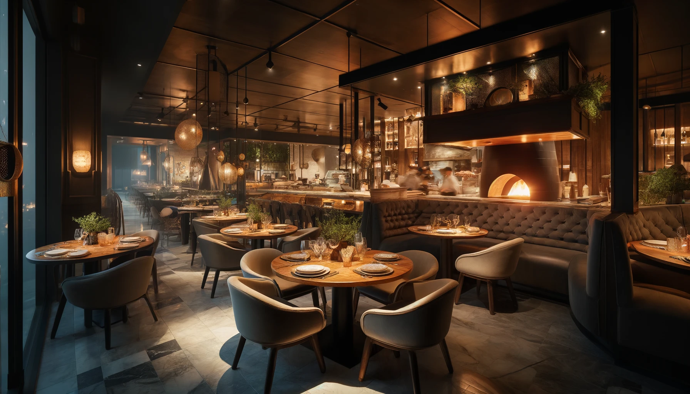

Um pouco da nossa historia
Nossa história em cada fatia
Aline's Pizzaria nasceu do sonho de trazer o sabor autêntico da Itália com um toque de sofisticação. Fundada por Aline, uma amante da culinária italiana, a pizzaria se destaca pelo uso de ingredientes frescos e selecionados, além do forno a lenha que dá às pizzas uma crocância e aroma incomparáveis.
Combinando charme rústico e conforto moderno, o ambiente da Aline's é acolhedor e elegante. Cada detalhe da decoração foi pensado para criar uma experiência única, onde clientes podem desfrutar de uma pizza autêntica em um espaço que celebra a tradição italiana.
